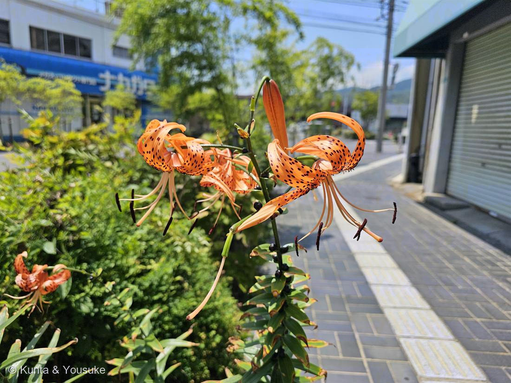
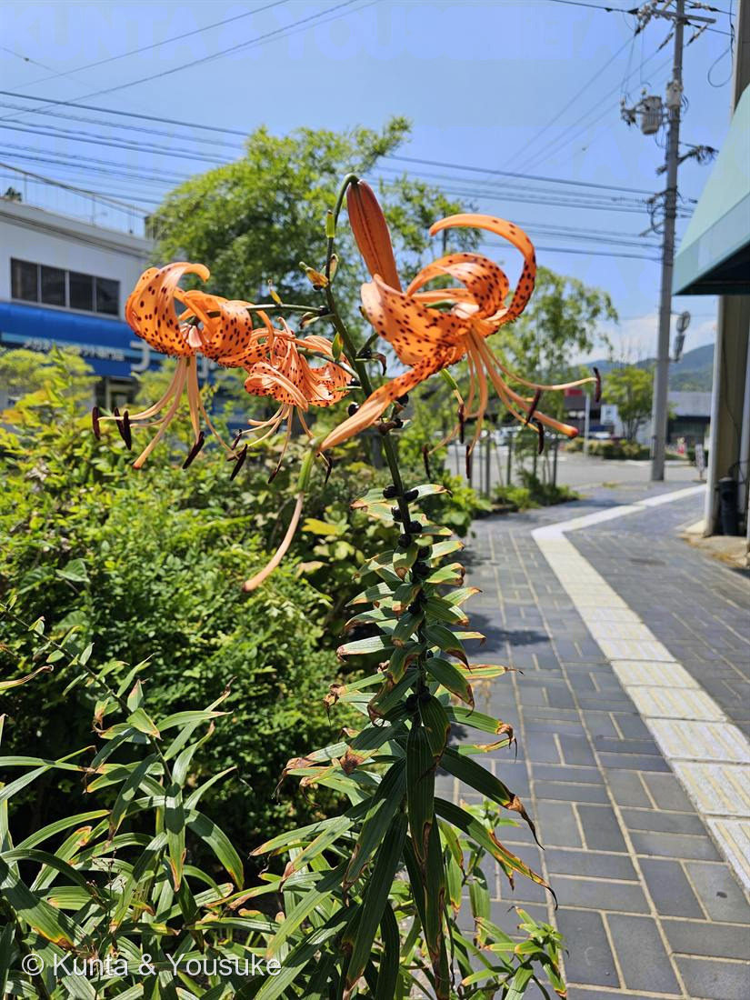

地図を読み込んでいるよ…
🔍 写真も地図も、押しているあいだ拡大して見られるよ（スマホは指を置いてすこし待ってね）。
🌍 の地図＝この子がもともと自生している場所を緑に。東アジア（日本・中国・朝鮮半島）。古くから栽培・半野生化。
⚠ 地図は国（日本と中国だけ県・省）までしか塗れないから、ほんとうの分布より広く見えていることがあるよ。地図はだいたいの場所。正確なところは、上の文を見てね。
オニユリ（鬼百合）
Lilium lancifolium Thunb.（= L. tigrinum）
別名 · タイガーリリー（虎百合）／英名 tiger lily
ユリ科 · Liliaceae（ユリ属）── 054 カノコユリと同じユリ属・ユリシリーズ第2弾
燻太さんの言葉「ユリシリーズ第2弾いこうか」……種を作れないのに、茎いっぱいの“ムカゴ”で殖える子
学名の由来と、ユリシリーズ第2弾
- Lilium＝ユリ。lancifolium＝「披針形（槍の形）の葉の」。別名 L. tigrinum（tiger＝虎）＝英名タイガーリリー。和名鬼百合＝大きく、たくましい姿から（虎柄の斑点も）。
- ⭐054 カノコユリと同じユリ属（Lilium）＝ユリシリーズ第2弾。反り返った花被片・黒い斑点・外へ突き出た雄しべ——カノコユリ譲りの「ターバン型」。でも、この子には、カノコユリと決定的にちがう秘密がある（下）。
⭐⭐⭐ 種ができない ── だから「ムカゴ」で殖えるクローン
- ⭐日本のオニユリは、たいてい三倍体（染色体を3セット持つ）。奇数セットだと減数分裂が割り切れず、種子ができない（＝053 シャガと、まったく同じ事情！）。
- ⭐⭐では、どうやって殖える？→「ムカゴ（珠芽）」。写真の茎、葉のつけ根に並ぶ黒紫の粒々——あれがムカゴ＝空中にできる小さな球根。地面に落ちて、そこから新しい株になる。⭐ムカゴを作るのは、日本のユリでオニユリだけ（＋分球でも殖える）。
- ⭐053 シャガ（三倍体・地下茎で殖える）と同じ「三倍体・種なしクローン」。でも殖える道具がちがう＝シャガは地下茎、オニユリは空中のムカゴ。⭐そして054 カノコユリは種を作れる——同じユリ属で、片や種（カノコユリ）、片やムカゴ（オニユリ）。
- ⚠花はちゃんと咲いて、雄しべも花粉も出す。でも自分は種を実らせない（花粉は、種のできるコオニユリなどを実らせることはできる）。呼んでも、自分は実らない——053 シャガと同じ、静かな花。
⭐ 燻太さんの問い ── この三倍体は、どこから来た？
- 三倍体（3x）＝「2xの配偶子 × 1xの配偶子」が出会ったもの。その2x配偶子の出どころは2通り：(a) 四倍体がふつうに作った2x配偶子／(b) 二倍体が減数分裂に失敗して作った「不減数配偶子（2n gamete）」。⭐(b) のほうが主役——4xがいなくても、2x × 2x で三倍体ができる。だから「三倍体がいる＝過去に4xがいた証拠」にはならない。
- ⭐⭐オニユリは、まさにその実例。オニユリの三倍体は「自家三倍体（autotriploid）」＝二倍体オニユリから、不減数配偶子を経て生まれたもの（細胞遺伝＋遺伝子データで確認）。天然の四倍体はいないし、種間雑種（異質倍数体）でもない。
- ⭐二倍体オニユリ（2n=24）は、対馬・朝鮮半島・済州島に狭く分布し、種もムカゴも作れる。三倍体（3x=36）は広く分布して完全不稔・ムカゴのみ。⭐基本数 x=12＝ユリ属で、2xと3xが自然にそろう唯一の種。
- （不減数配偶子は、ふだんはまれ〈非雑種で平均およそ0.56%〉だけど、種間雑種や低温ストレスで一気に増える。倍数体が生まれる主な入り口。）
⭐ 見分け ── コオニユリとの決め手は「ムカゴ」
- そっくりなコオニユリは、ムカゴを作らない・二倍体で種ができる・やや小ぶり。→ 決め手は「茎にムカゴがあるか」。写真の子は、茎に黒いムカゴがびっしり＝オニユリで確定。（→ おまけをコオニユリにしたのは、この“見分けの相手”だから。）
⭐ 食べるユリ ── ユリ根と生薬
- ⭐オニユリの鱗茎（球根）は「ユリ根」として食用（茶碗蒸し・きんとん・煮物。ほくほく＆ほろ苦い）。054 カノコユリが「見て愛でる／薬の親」なら、オニユリは「食べるユリ」の代表。
- 鱗茎は生薬「百合（びゃくごう）」にもなる（咳や不安をしずめる、とされる漢方）。⭐ムカゴも茹でて食べられる。種を作らないぶん、球根とムカゴに力をためる——それが、人にとっては“ごちそう”になった。